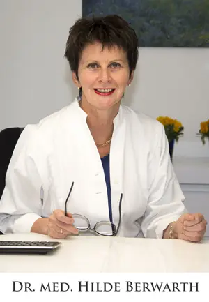
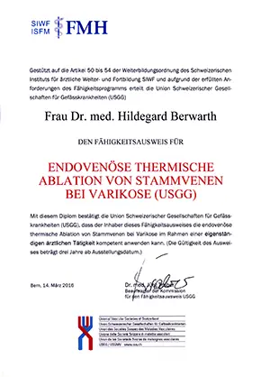
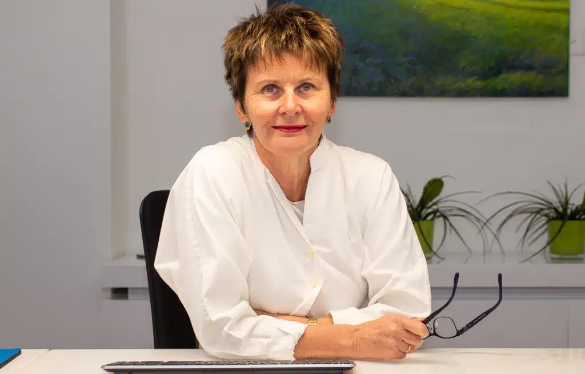
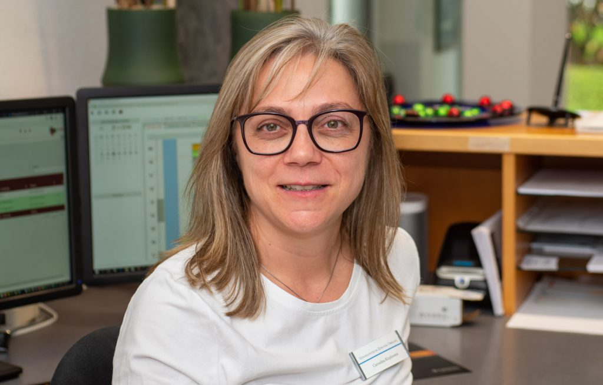

… hat sich auf die Diagnostik und Behandlung von Venenleiden (Krampfadern) spezialisiert. Als Venenärztin im Kanton Zürich ist sie seit mehr als 20 Jahren in der Phlebologie tätig und gilt als Pionierin der modernen, endovenösen Therapien in der Schweiz.
Als Chirurgin und Phlebologin mit allen dafür notwendigen Fähigkeitsausweisen bietet sie das gesamte Spektrum der Venen-Therapien aus einer Hand – von der Voruntersuchung mit Ultraschall über die Therapie aller bewährten Verfahren bis zur Nachbetreuung. Das bedeutet einen optimalen Diagnose- und Behandlungsablauf bei höchster Qualität, ohne Informationsunterbrüche und Doppeluntersuchungen.
Seit über 10 Jahren betreibt die Venenärztin ihre eigene Venenpraxis im Kanton Zürich in Wetzikon mit einem eingespielten Team. Die Praxis ist zentral gelegen, der Zugang ist ebenerdig und barrierefrei, mit genügend Parkplätzen direkt vor dem Eingang. Das Venenzentrum ist mit den öffentlichen Verkehrsmitteln gut zu erreichen.


Fähigkeitsausweis endovenöse Ablation
| 1966–1974 | Gymnasium der Heimschule Kloster Wald, Abitur |
| 1975 | Gesellenprüfung im Schneiderhandwerk |
| 1975–1976 | Studium der kath. Theologie, Biologie und Geographie in Freiburg im Breisgau |
| 1976–1982 | Studium der Medizin in Freiburg im Breisgau |
| 1982 | Approbation und Promotion |
| 1983–1984 | Innere Abteilung des Krankenhauses Pfullendorf (Chefarzt Dr. Vogt) |
| 1984–1987 | Facharztausbildung Allgemeinchirurgie, Städtisches Krankenhaus Überlingen |
| 1987–1989 | Facharztausbildung Gefässechirurgie & Allgemeinchirurgie, Städtisches Krankenhaus Friedrichshafen |
| 1989–1990 | Facharztausbildung, Städtisches Krankenhaus Ravensburg |
| 1990 | Facharztprüfung Chirurgie |
| 1990–1994 | Wissenschaftliche Assistentin, Universitätsklinik Freiburg, Abt. Unfallchirurgie |
| 1994 | Prüfung zum Facharzt Unfallchirurgie |
| 1994–1996 | Oberärztin, Universitätsklinik Freiburg, Abt. Unfallchirurgie |
| 1999–2008 | Chirurgin/Phlebologin, Berit Klinik in Teufen SG – Spezialisierung auf endoluminäre Venentherapien (Laser und ClosureFast) |
| 2008–2013 | Gemeinschaftspraxis mit Prof. Enzler, Venenzentrum am See, Feldmeilen |
| 2013 + | Gründung der Venenzentrum Zürcher Oberland AG |
| 1982 | Approbation als Ärztin |
| 1990 | Facharzt Chirurgie |
| 1994 | Facharzt Unfallchirurgie |
| 2006 | Fähigkeitsausweis Phlebologie (SGP) |
| 2010 | Fähigkeitsausweis Ultraschall (SGUM) |
| 2016 | Fähigkeitsausweis endovenöse thermische Ablation von Stammvenen bei Varikose (USGG) |
| SGP | Schweizerische Gesellschaft Phlebologie |
| FMH | Verbindung Schweizer Ärzte |
| AGZ | Ärztegesellschaft des Kantons Zürich |
| SGUM | Schweizer Gesellschaft für Ultraschall in der Medizin |

MPA

Ärztliche Leitung

MPA
Richtig behandelte Krampfadern haben eine Rezidiv-Wahrscheinlichkeit von ca. 5 %. Da Krampfadern nicht nur ein ästhetisches Problem sind, sondern zu schweren Veränderungen der Haut und des Unterhautgewebes führen können, sollten sie so früh wie möglich behandelt werden. Einmal aufgetretene Hautveränderungen sind nicht mehr rückgängig zu machen. Auch bei einem tatsächlichen Rezidiv ist eine baldmögliche Behandlung anzustreben – je kleiner der Befund, desto kleiner der Eingriff.
Der Goldstandard der Diagnostik ist neben Anamnese und klinischer Untersuchung die farbcodierte Duplexsonographie (Ultraschall). Beim ersten Termin im Venenzentrum (Venencheck) werden die betroffenen Beine mit Ultraschall untersucht; der Ersttermin dauert 45 Minuten. Dabei werden das oberflächliche und das tiefe Venensystem untersucht und ein Befund dokumentiert. Entscheiden Sie sich für eine Therapie, kann diese in der Regel in ca. 4–6 Wochen nach dem Entscheid durchgeführt werden.
Nach dem Eingriff werden Druckverbände angelegt, die Sie nach 1–2 Tagen entfernen können. Bei ausgeprägten Befunden empfehlen wir Kompressionsstrümpfe für wenige Tage. Blutergüsse werden nach kurzer Zeit resorbiert; die thermisch verödeten Stammvenen werden vom Körper in den folgenden Monaten vollständig abgebaut.
Krampfadern sind vor allem ein medizinisches Problem. Nicht behandelt, kann es zu schweren Veränderungen der Haut und des Unterhautgewebes kommen, bis hin zum Ulcus (offenes Bein). Einmal aufgetretene Hautveränderungen sind nicht mehr rückgängig zu machen.
Ja – die Entfernung von Krampfadern wird von der gesetzlichen Krankenkasse bezahlt, abzüglich Selbstbehalt und Franchise. Es muss keine Kostengutsprache eingeholt werden. Die Behandlung von Besenreisern gilt dagegen als kosmetische Behandlung und wird nicht bezahlt.
Besenreiser sind Veränderungen in den kleinen Hautgefässen – ein lokales kosmetisches Problem. Krampfadern entstehen in grösseren Venen, weil die Klappen nicht funktionieren. Dies führt zu Stauungen und zu Veränderungen in der Haut und dem Unterhautfettgewebe.